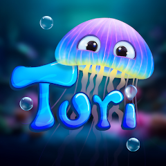

PLACEHOLDER — ADD AN APPROVED IMAGE OR YOUTUBE VIDEO. ADD MORE FIGURES TO ENABLE THE CAROUSEL.
CASE STUDY
Add the studio or mark this as a personal project.
Explain the gameplay or engineering problem and how you approached it.
Add the tools and technologies used for this project.